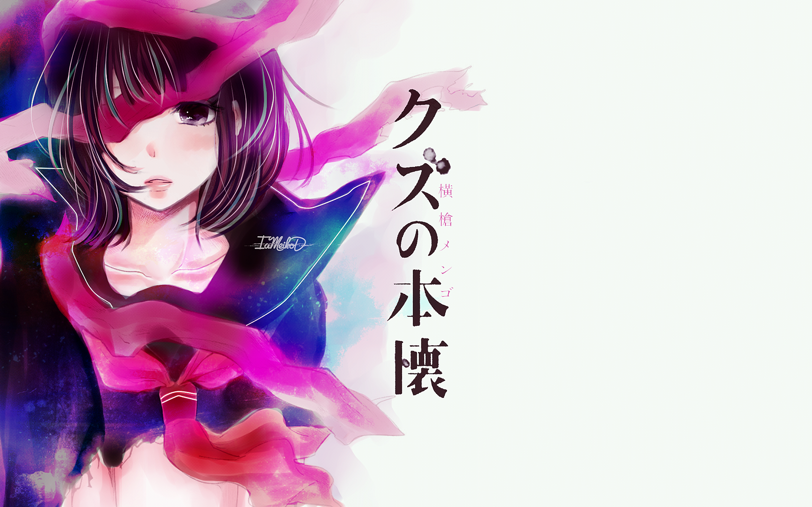

Just because--或许我们都曾少年
“正因如此，处在青春年华的他们，或带着各自的愿望，或带着心中的遗憾，或带着对未来的期待，信步前行”
在这部番进入第十话的时候，鸭志田一让我们看到了这个故事究竟可以细腻到什么程度，而第十话的转折也必将会把justbecause整体的故事节奏引向一个更广的层面。
我们或多或少都接触过青春片，无论是国产青春电影还是电视剧，还是日系的青春电视电影乃至动画漫画，众多青春题材的故事层出不穷本就代表了人怀念美好，在进入“社畜”的年纪还能想起当年无忧无虑，尽情释放自己张扬活力的时候。不得不说，Just Because抓住了一个最好的点，这也最终造就了这部作品不同于过往大多数作品的魅力。
这个选题可以说是很符合我的口味了（各种意义上），没有选择公认最适合进行恋爱喜剧展开的高一与高二，而是选择了即将毕业的高三生们，以一个距离毕业只有一步之遥的时间背景开展整个故事。
故而，整个故事从一开始就透露着毕业季独有的略微阴沉的气氛，而主人公之间也没有一些常规作品中的固有萌元素，以及特定的角色定位。没有该死的傲娇金发双马尾，天将青梅乱作一团，连人物的发色都中规中矩。画面中透露着一股浓浓的……现实感……（才不是经费不够了（捂脸））
（是不是近些年的番剧都喜欢搞这一套，我记得月色真美也是这样的w）
所以综上，我觉得这部番剧力求给我们还原一个真实的高三生活，不论是主人公们的性格、行动，还是整个作品的总气氛，亦或者是作品的真实地点取材，都能感受到制作组的用心良苦，而这样最终打造出来的作品，正是不同于一些一味发糖的或者轻视剧情只顾角色的作品，它胜出一筹的地方，首先就是它独特的真实感。
或许……那段日子，每个人都稍微有过那么一点焦虑……在青春的尾巴上，我不止一次的问自己：“我能做什么呢？”
怀念曾经无忧无虑的少年时代，谈一场刻骨铭心的恋爱，还是在如影随形的升学压力中艰难前行？
无论答案如何，作为自身的主角以及他人的配角，没有人想毫无作为地演绎这段最美好的时光；即使轰轰烈烈的理想与现实相去甚远，即使我们的真实人生只不过是一成不变的流水账……
”Just Because！”就是这样一部“极简主义”的青春画卷。没有耳熟能详的王道对白，亦没有浓墨重彩的艺术渲染， “Just Because”讴歌着我们那看似不值一提的生活断片，并将它原汁原味地展现出来。纵使有些人的锦瑟年华与浪漫无缘，相信也会在那些日常点滴中引起共鸣。值得一提的是，与其借助亢长的台词与旁白，“Just Because”则靠着光影效果以及人物表情的变化来传达它细腻的情感。这种简约而不简单的细节处理，仿佛将我们带回了那个彷徨而又冲动的年代……

不得不承认，作为片中主人公，泉瑛太有着他的独特魅力。作为一名不合时节的转学生，瑛太的高中生涯可以说是所剩无几。然而与旧友相马和初恋夏目的再会，却使他停滞的时间得以再次转动。当小心翼翼地确认彼此的心意后，瑛太便展现了他强大的意志力与行动力：他一边毅然决然地改考夏目的志愿校，一边通过细微的关怀和鼓励来协助她顺利考上理想中的大学。这种令普通人汗颜的果断与坚韧，也终于让命运向他露出了微笑，尽管梦圆的方式有些意想不到…
当然不要忘了我们个性迥异的女主们。随着瑛太的归来，夏目不得不再次直面自己朦胧的情感，并终于意识到了自己的真心所在。有些倔强的她摆脱了迷茫，一步一个脚印地向目标前进；森川在权衡异地恋的利弊之后，决定让时间来检验与相马的感情；当然还有小宫，活泼开朗，直来直去的她一旦发现机遇，就会毫不犹豫地去争取。望着她们的成长，对于旁观者的我们来说，想必也是充满了感动…
而老实说，除了令我自惭形秽的男主，整部番里我最喜欢的角色，又或许已经真实到不能被称之为角色的……人，小宫惠娜了。
虽然……她最后没能如愿以偿……
“偏好泥沼式的恋爱却喜欢清爽的情节和人物，故事纠结而目的明确，经历曲折而想法始终如一，这太难得了。”
突然发现这句话既可以送给Just Because，也可以送给小宫惠那了。
围绕小宫的话题感不断，戴君说这是因为小宫面临道德困境，我更想说的是，小宫始终在经历一种恋爱惯性。
根植在心底的恋爱惯性
从物理学的角度看，惯性一词伴随牛顿第一定律而生，惯性作为物体固有的属性，是物体抵抗其运动状态被改变的性质。倘若我们抽取其定义的核心内容，放到恋爱关系上，我们可以得到这样的一个解释，即：恋爱惯性作为人本身固有的心理状态，是人在恋爱关系中抗拒人际身份关系发生变化的一种特质。而这样说来，小宫的角色身份，恰恰是浸透在这样地恋爱关系中的。
因为面临废部危机而不得不立下获奖的誓言，因为要征求得到瑛太对把照片拿去参赛的许可而不得不去接触了解瑛太，因为偶然间熟知了瑛太对夏目的心意而选择为他们的关系而奔走，这一切都基于小宫的理性和性格中的本能，在这样的理性下，她试图控制所有可能导致更坏结果或者意料之外事情的发生，选择不去放弃，但是也坚守在自己的底线下所做的一切。
然而，感性的波动是小宫拿捏不到的，她萌发的情感促使她无法维持自己既定好的行动线路。捧着手机踌躇不安不知道自己要不要给瑛太发消息，下意识地去找夏目问能不能和前辈约会（当然这里诞生了justb的经典场景），在学校和瑛太相遇互相躲藏在柱子后面。小宫逐渐意识到自己的心意，而她试图做出的所有努力，都在企图维持先前的局面，却不知自己已经悄然改变。
她只是想得到瑛太的许可以便自己能拿到照片去参赛—-而多次对瑛太的探访埋下了最初感情的种子
她只是想促成瑛太和夏目的感情—-而细致的体会让她在理性和感性间反复纠结
她只是想正面面对自己的心意—-而无意中的那场约会和壁纸最终造成了复杂局面
她只是想尽自己最大努力解决之前自己的过错—-而那场漫长的骑行和挂了满满一手的祈福却真正代表着她对瑛太的感情
这种惯性迫使她必须与改变的内心发生抗争，也迫使她必须正面面对自己的一切感情。可以说，十话里小宫那段漫长的骑行是小宫人物形象的一种转折。而在这转折的背后，我们看到了一个更加主动，强大的小宫。过去的她试图回避任何有可能引发争端的选择，她从远离到靠近，这种内心的反复间，是自己的内心意识与恋爱惯性的搏斗，然后，小宫在第九话和第十话里突然改变了姿态，变得主动，她不再隐瞒和回避自己的感情，在于惯性的搏斗下，她没有选择顺从理性，而选择了放任自己的内心持续漂流，她挂念着前辈，担心着学长，所以她选择了告诉瑛太她的心意，因为爱情本身就是单行道上的旅程，在不断加速的过程中，她需要抵抗的力量在持续给他施加压力，我们都无法断定终末来临知识她的处境，但是我们所能看到的，是她在这条单行道上，抵抗惯性而释放的点点火光。
或许这就是小宫惠那出现在故事里最大的意义。
（稍微讲点题外话）
青春片应该怎么拍
在聊起justb的时候，经常能够听到的一个词就是“连贯”或者是“细腻”，可能这是鸭志田一自樱花庄之后最大的蜕变了，如果说青春片应当着重表达青春时期情感的自然表现，所以要辅以相应的艺术手法升华和再创作，然而往往这样的再创作会让人们抓不到重点。大量戏剧化的冲突会让人们迷失在反复的情节跌宕里从而无法获得更多的实感。当实感被削弱，故事的真实性和代入感就会随之下降，进而引发的就是一系列“尴尬“的体验。
于是就有了那个说法，
美国—-主角参加各种社团、比赛，然后顺便谈个恋爱，最后既实现了个人价值，又抱得美人归，最后主角说，我们的青春是如此精彩！”—-一段青春期奋斗史；
日本—-校园热暴力、冷暴力，主角一开始被欺凌，然后在朋友、家人和梦中情人的激励下奋起，突然从小孩变成大人，靠自己的努力赢得大家和梦中情人的认可，最后主角说：“我们的青春值得奋斗！”—-一段青春期的蜕变史；
中国—-各种恋爱、各种花式作死、各种劈腿、各种约炮、各种堕胎，最后主角说：“我们的青春最终输给了现实。”—-一段青春期堕落史。
在国产青春片的范畴下，这样的情况在前些年被反复搬上荧幕。从《小时代》到《左耳》，从《致青春》到《夏洛特烦恼》，国产青春片的取材类型和塑造方式往往被人们归纳和总结为撕逼打胎痛哭流涕外加怀旧现实冲突释怀的固定节奏。在为了戏剧冲突和凸显表现力的当下，细节感被反复削弱，到观众眼中多半只剩一地鸡毛而已。当然，我们需要肯定这种取材风格和故事逻辑的存在意义，因为它抓住了两类中国目前最大的观影群体的内心痛点。一类是刚刚结婚进入三人家庭的社会人们，他们因为现实环境的压迫急需一个出口来释放自己被压抑和亟待宣泄的感情，二类是即将步入社会的青年人们，他们需要找到一个为了自己残存的理想和信念，为了相信身边爱情的途径。然而，大量艺术化的手法磨灭了感情的现实根基，当爱情的氢气球不断向上漂浮的时候，他们的最终结局只可能是自我毁灭。
justbecause带给了我们一个崭新的拍摄手法。又或许这个手法一点都不新，我们当初就是从这里出发的……现在得想办法回来而已。
鸭志田一没有过多地使用技巧对矛盾冲突进行渲染，在justbecause原作小说里，我甚至感受不到经常能够在日式轻小说中感受到的都合主义的色彩。人物的心理铺垫是极其扎实的，即读者可以感受到从剧中人物的行为都事出有因且铺垫翔实，而这也是justbecause最大的优势。
我们能从瑛太夏目和小宫的故事里都能依稀找到自己的影子。夏目和瑛太各自的执拗，面对二人心意时微妙的表情变化，瑛太在脱口而出自己对夏目感情的一瞬间的收束，夏目在选择志愿时的纠结。我们也曾或多或少体会过身为小宫的心态，猛然间发现自己爱慕着一个人，但是没有很好地办法去接近，去表达自己的感情，又害怕自己破坏了他本来的生活……
我们能从叶月阳斗的故事里看到异地恋的不放弃和面对家庭的犹疑。本就没有思考过爱情的自己突然被爱情笼罩，担心未来无法前进的时候的自我退缩，无法相信彼此相隔仍能收获美好结局的放弃……
曾想过如果要给Just Because做个翻译，会怎么样选择用词。大概是，”仅因如此”
“仅因如此，这个故事没有一丝半点的炫目技巧，就像原作故事发生地的神奈川县镰仓市里那条穿成而过的河流，平稳却饱含温柔”
“仅因如此，这里每一个人物的表情，每一次回眸，每一次停在路边的脚步，都像极了我们曾年少时那片刻的反应”
“仅因如此，这里发在line群组里每一条消息，每一眼对屏幕的关注，都是我们曾经迫不及待希望看到那个人回复的影子”
“仅因如此，我们，还在少年时”
所以话说回来，两情相悦的秘诀究竟是什么，恐怕答案就像本片标题一样简单：
“因为喜欢着她的你的背影，实在太过耀眼；
因为喜欢着他的你的侧脸，美得无法形容。”
因为你我，依旧少年……
520真是一个神奇的日子
520真是个神奇的日子
去游了个街
其实街上的情侣不是很多
只是他们刚好都走到我们面前了而以
图书馆河畔的草坪上
有位小姐姐哭的很伤心
路过书城的友唱
一张凳子上摆了包包
有人在撕心裂肺的吼叫
你看吧
世界上还有那么多爱恨情仇
所有的情歌唱的，不过是同一个故事
时光里永远有无数的男女主角，怀揣着甜蜜与浪漫，在疯狂或是坚守
没人能去揣测所有的好坏与对错
因为清楚自己几斤几两我就没有上前
两个故事都是擦身
姑娘
能让你哭成这样的人，对你一定相当重要吧
本不该多嘴
但奈何实在是心疼
人粗不会说话
请相信世界还是温柔的，你所有的坚守，都一定会如愿以偿的


说到底，不过是人渣的本愿罢了
或许，这真的能被称之为人渣

所以我为什么会去看这部番呢（捂脸），《人渣的本愿》是由madhouse公司制作，
于2017年1月播出的一部tv动画，我至今还记得当初在b站观看的时候那满屏幕爆
炸的弹幕，什么—-“麦就是个渣男”、“求求你别和我们家花火在一起”、“他怎
么可以这样”之类的。一时间各种cp党争，各种人物优略……但老实说今天我的
漫评不想谈这些奇怪的东西，毕竟作者写的那么清楚了，有些家伙就是看不见。
“人渣的本愿”
人渣的本愿
我甚至要放大几倍来强调这一点。而且不只是标题，文中也不止一次的出现了“人渣”这个词
，甚至角色本身也用这个词形容过自己。所以这一点委实没什么好谈的，所以我就直接入题了，
我真的是想向大家推荐一下这部番，当然，请各位随我一起，摆正心态咯w

或许，我们每个人都是人渣
嘛，我只能说，上一次有艺术类的作品给我一同样的感觉，现在想来还是村上春树的
＜太阳以南，国境以西＞吧。
倒不是说他们真的文笔多么完美，剧情多么缜密，反之＜国境＞一书似乎有些随意，
主角不过是如今世界里的一位小人物罢了，剧情也没有什么过多的价值。之所以会让我感到震撼，
大多是因为......第一次，有人如此明确地告诉我＂没关系的＂，
第一次有一种......被世界所宽恕的感觉吧。
这部《人渣》恰有异曲同工之妙。
而之所以喜欢，原因其实也挺简单的
因为我知道，我也是个人渣

其实小时候起就发现了，我实非君子，真小人也。我相当自私自利、不地道、无价值。
我无谓地伤害周围的人，同时又因此伤害自身。损毁别人，损毁自己。我不是想这样才这样的，而是不想这样也得这样。
在此前的人生途中，我总觉得自己将成为别的什么人，似乎总想去某个新的地方、开始新的生活、在那里获取新的人格。
迄今为止不知重复了多少次。这在某种意义上是成长，在某种意义上类似改头换面。
但不管怎样，我是想通过成为另一个自己来将自己从过去的自己所怀有的什么当中解放出来。
我一心一意认认真真地这样求索不已，并且相信只要努力迟早会实现的。
然而最终我想我哪里也未能抵达，无论如何我只能是我。我怀有的缺憾无论如何都依然如故。
无论周围景物怎样变化，无论人们搭话的声音怎样不同，我也只能是一个不完整的人。
我身上存在着永远一成不变的致命的缺憾，那缺憾带给我强烈的饥饿和干渴。
这饥饿和干渴以前一直让我焦头烂额，以后恐怕也同样使我烦躁不安。
因为在某种意义上缺憾本身即是我自身，这我心里明白。如果可能，现在我想为了某人而成为新的自己，这我应该是做得到的。
可能并不容易，但努力下去，总还是可以获得新的自己的。不过老实说来，事情一旦发生一次，可能还要重蹈覆辙。
这种迷一样的罪恶感和无力感追逐了我大概整个初中，大家都知道坚持下来的是英雄好汉，却没有人在意过失败这会怎样，
他们会被放逐被唾弃被嘲笑被钉在耻辱柱上......我不想成为他们中的一员，
可却又同时理解着自己的卑微，混乱与纠结差点把我永远定格在那个时间...
然而村上和横岛却说
＂没关系的＂
就像＜国境＞的结尾，那个小人物不忠过，出轨过，他撒过谎，他那么那么不堪，那么那么卑贱，他最终还是得到了这个世界的原谅。
就像《人渣》里的花火，她苦恼过，纠结过，她欺骗过他人，也欺骗过自己，她违背过誓约，
她因为寂寞渴求过别人的温度，但她最后还是勇敢的踏上了向前的道路，
即使她明白下一次可能会伤别人伤得更深，会更加寂寞，她也义无反顾的走了下去......
这对当时的我来说真心是一种救赎，感觉它代表这个世界原谅了我
感觉这个世界，还是能容得下我这样的人的~
就像我老是挂在嘴边的那句话，其实也是村上告诉我的那句支撑我走到现在的那句话-----
＂这是世界那是我＂
又或许，这根本不是什么故事
抛开这些奇怪的东西，我们看看，《人渣的本愿》到底讲了一个什么样的故事？
这是一个
讲“帅哥美女”的故事
漂亮的蓝毛小姐姐喜欢帅气的蓝毛小哥哥，但帅气的蓝毛小哥哥喜欢漂亮的粉毛大姐姐，
漂亮的粉毛大姐姐不喜欢帅气的蓝毛小哥哥，但帅气的黄毛小哥哥也喜欢漂亮的粉毛小姐姐
不料漂亮的粉毛小姐姐是个bitch，她的兴趣爱好是睡男人，以及睡别的女人的男人，以此来达到满足自己虚荣心的目的
所以漂亮的蓝毛小姐姐，和帅气的黄毛小哥哥就在一起，把对方当成自己喜欢的对象
“做爱做的事”
最后大姐姐玩累了，嫁给了帅气的蓝毛小哥哥
男主女主恋情失败，各自踏上了寻找真爱的旅途......
也就是说
它说明了
人们喜欢帅哥美女，喜欢和帅哥美女谈恋爱，会因为角色的萌和帅疯狂的厨他们。
一次对于普通人来说意义重大的约会，在他们看来可能只是一时兴起的产物，
就算明确说明了不会喜欢上你，但依旧会有人疯狂，飞向你的床。
他们想恋爱很简单，无时不刻都有追求者，他们游离于各种人之间，玩累了就找个老实人嫁了，最后还能落个“岁月静好”的名声
这，是什么呢？？？
这
就是现实
最后出了大姐姐没有被人捅之外，这部番讲的大多数东西都是现实
内心深处的小邪恶，赖以生存的优越感，用下半身思考的男人，互相养备胎的潜规则
让作者以小清新的画风集中的，展现在了各位面前，让人难以接受
毕竟
现实真是太特么残酷了
相较于普通人，颜值高的人拥有更多的权利，他们往往哭一哭就能被同情，撒个娇就能被原谅，
就算是耍流氓，一个劲的对女生说“开房开房”，也能被解释为幽默风趣，多情郎。
马德，这种现象在现实里已经够多了为什么还要这里再虐我一遍。
姑娘们你们想想：你们讨厌绿茶婊吧？
可有些男生他就是喜欢女茶婊啊，你就是拿她没办法啊。
最后结局就是别人拿到了你拿不到的东西的东西，你这就是酸，是嫉妒，是吃不到葡萄的狐狸
所以与其说是三观不正，不如说是现实虐人
它不像其他奇怪的番剧《school days》，讲了一个某名奇妙被倒贴的辣鸡的故事，而是好好的告诉了我们
“优秀的人会被人喜欢”
这一更古不变的真理
这里的优秀可能是脸，但也可以是其他的东西
小鲜肉比你帅，还不停地出现在大家的视野中，有女孩子追捧很正常
女茶婊你你会打扮，还能言善辩精准把握男人内心，汉子们怎么可能不喜欢
既然先天颜值已经输了，那我们就必须通过后天努力获得过人的长处成为现充
毕竟，人们喜欢的是帅不是娘，
是绿茶，不是婊
奔跑吧少年正能量无处不在啊，男女主人公被人追，并不静静是因为长得好看啊
他们，可是优等生啊
学习好，也是一种优秀啊！！！！
所以少年们
你们今天